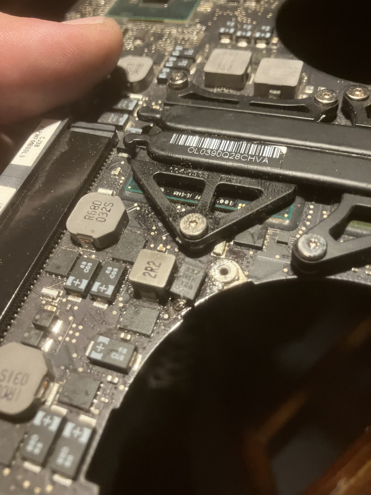
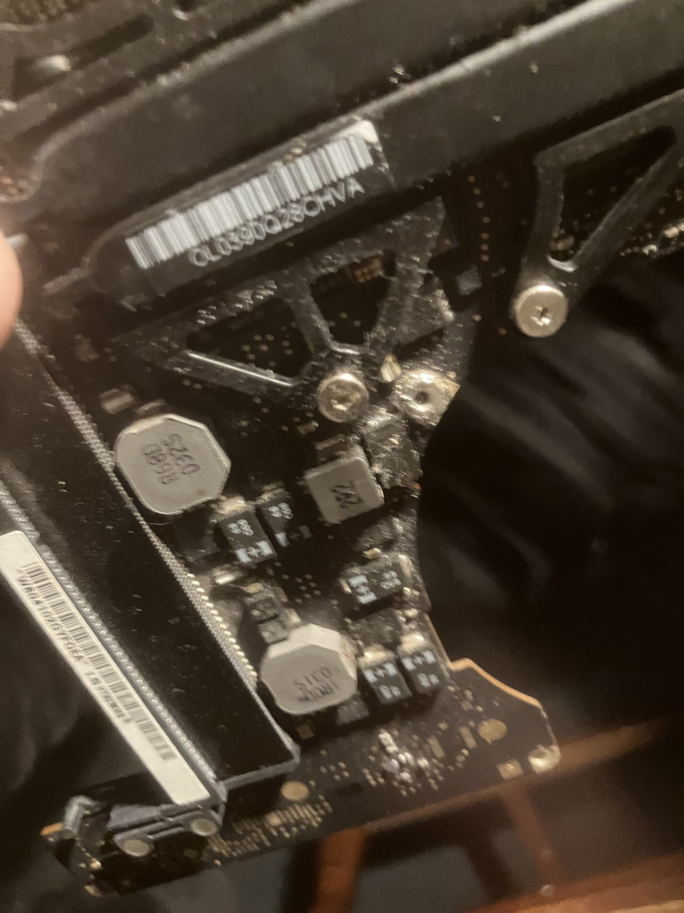

This page contains information regarding Kernel Panic errors in A1286 Macbook Pro laptops from 2008-12.
Motherboard Revision: EMC No.:2353 i5
**The pcb isn't really marked so it is unclear exactly what capacitor it is.
If I can find a schematic I will update this.**
If the computer switch's between the igpu to the onboard graphics chip the computer will freeze/shutdown
Replacing a capacitor on the graphics with a higher value [equal value] allows the power line to either match the no longer consistent/expected voltage...
regardless what the hardware or software is doing. You have to scratch the pcb etching to make a new ground point.
Capacitor value is uknown but 337 2R5k 846 are the markings guessing its something like 330uf @ 25ohm I cannot find where I had gotten them from.
A similar issue happens with the Playstation 3 COK-001 Motherboards... the 1001(?) error but this is still a tantalum capacitor so w/e.
This thing is extremely dirty but here are a few pictures.

